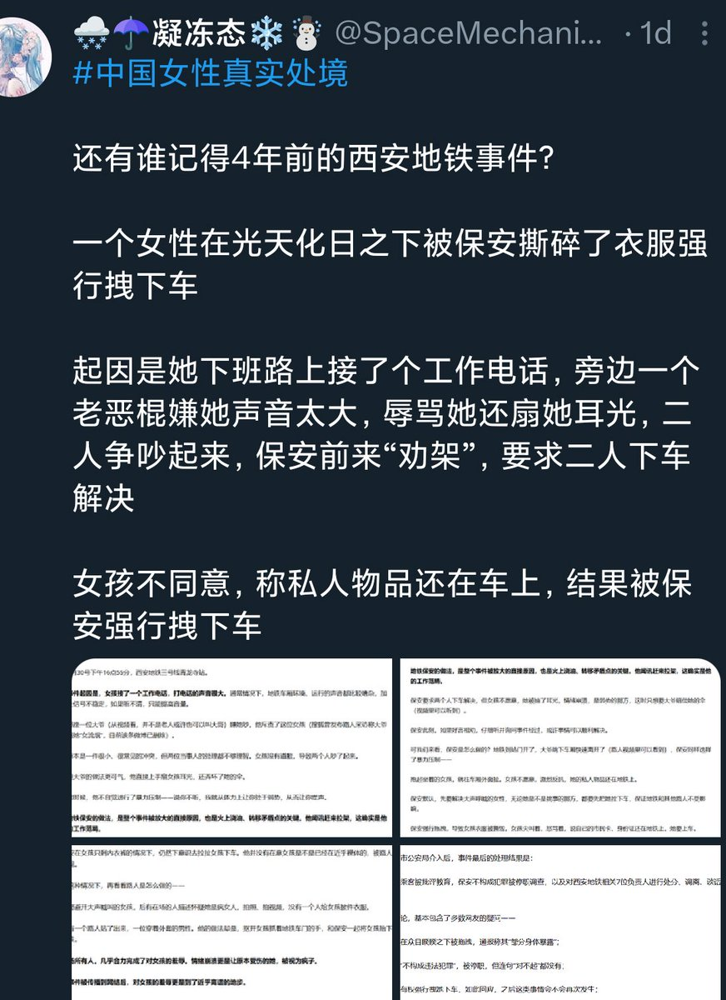
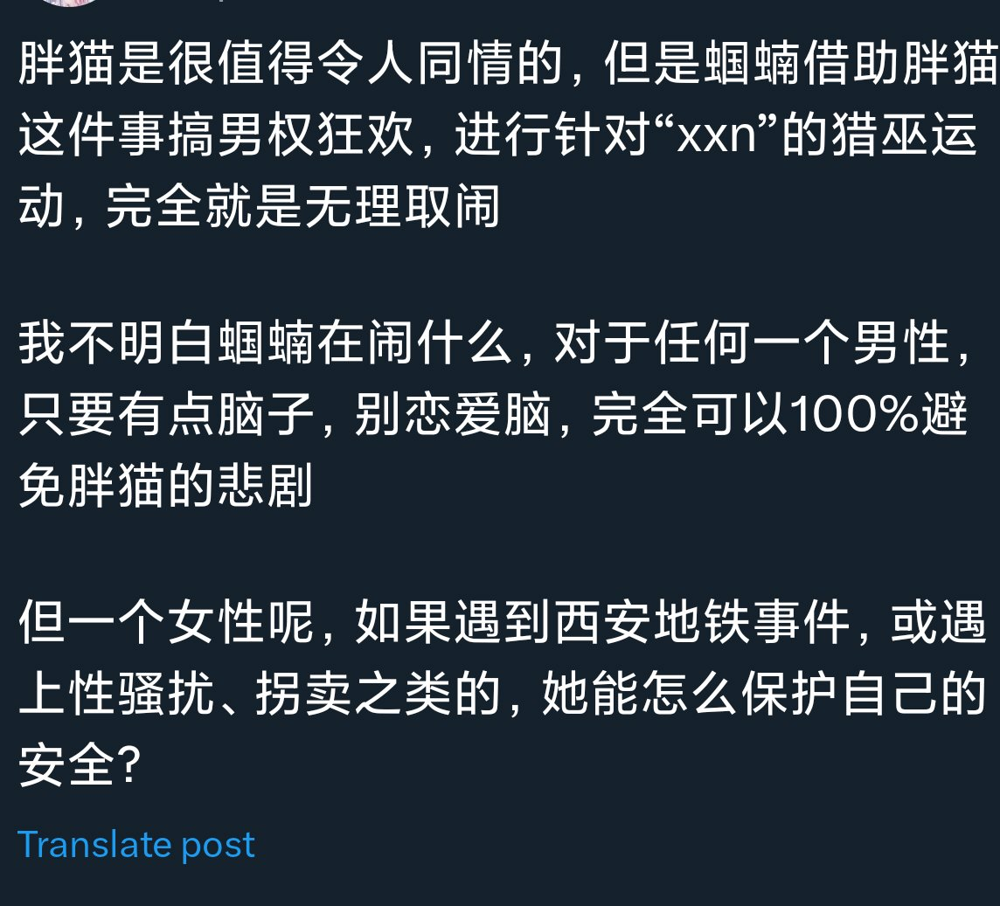

🍀🍥竹蜻蜓🍥🍀（摆烂版）
@zqtlovekris99
有些激女喜欢说教我，如果大家都这样那女性就没有未来了，你有没有觉得这句话特别像"如果大家都不生孩子人类就灭绝了"一样，我不干有的是人干，我没有把我的观念加在任何人身上没有强迫任何女性仿照我的做法


🍀🍥竹蜻蜓🍥🍀（摆烂版）
@zqtlovekris99
并非挂人单纯感慨，有没有发现这些事的共同点都是受害者是女性？我作为一个体重力量都占绝对劣势的女性怎么保护自己的安全呢？我的解决方法是不做女性。只要我脱离了受害者群体我就能减少大部分可能会受到的伤害。至于这个群体的未来跟我有什么关系，我只是一个只能活几十年的普通人。 https://t.co/pkS8pSwVsU